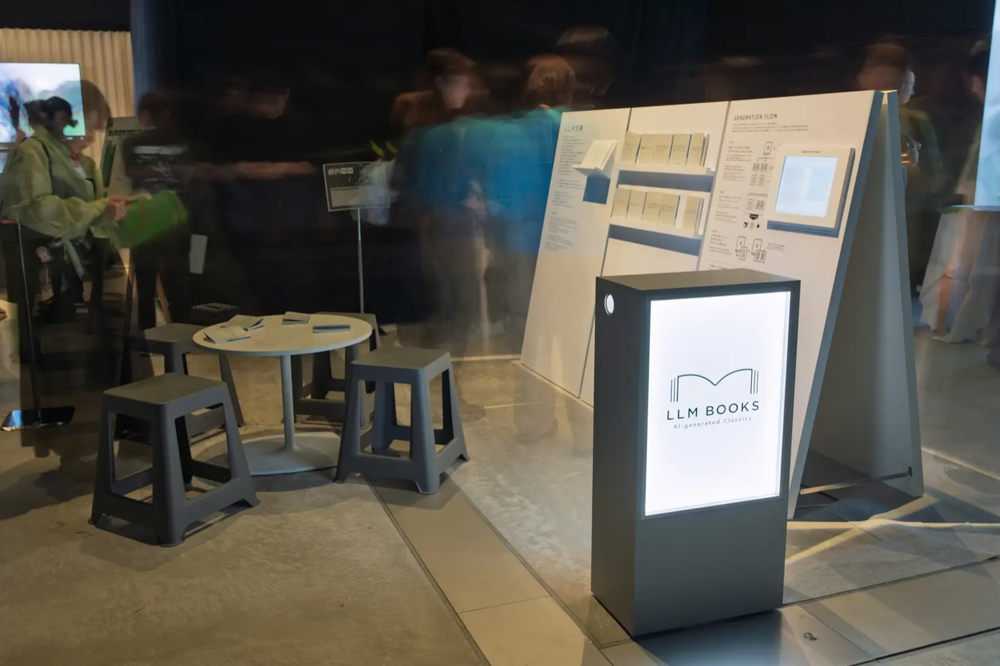

Overview
- Artist: Qosmo × Dentsu Lab
- Format: Installation
- Year: 2026
Concept
Dentsu Lab との共同プロジェクト。LLMと学習データの著作権をテーマに、生成AIにおける「生成」とは何か、創造と複製の境界はどこにあるのかを問いかける。
既存の文学作品について、本文ではなく「あらすじ」だけを入力するとLLMが原文とほぼ一字一句同じ文章を生成してしまう、という研究に着目した。作品を300〜500字程度に分割してあらすじをLLMで生成し、あらすじと原文のペアでファインチューニングする。その後、学習に使っていない別の作家の作品のあらすじを入力すると、LLMは原文をほとんどそのまま生成してしまう。この現象は著作権の有無を問わず多くの作品で確認され、LLMが数多くの著作物を無断で学習データとして使用していることを示唆している。
展示では、すでに著作権の切れた夏目漱石や芥川龍之介などを題材に、実際に生成された文章を製本し、文庫本のシリーズとして提示した。
本作品にてアシスタントとして参加した。
Exhibition
- 2026/6/26 - 2026/6/28
- NU Festival
- @MoN Takanawa: The Museum of Narratives
Credit
- Creative Director: 徳井直生 (Qosmo), 田中直基 (Dentsu Lab)
- Art Director: 藪本晶子 (電通)
- Technical Director / Programmer: 中嶋亮介 (Qosmo)
- Producer: 澤村充章 (電通クリエイティブピクチャーズ)
- Assistant: 土田篤弥 (Qosmo)